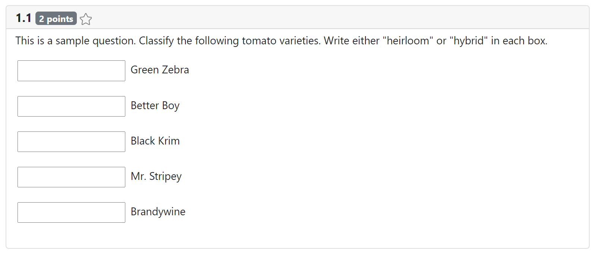
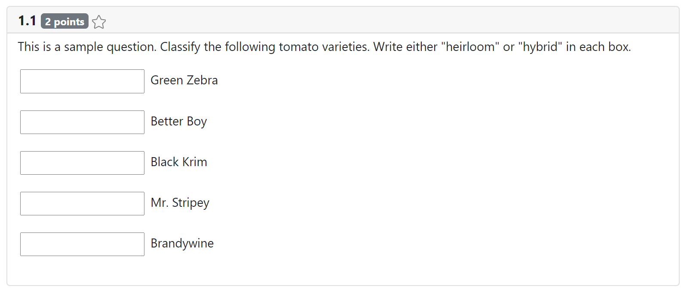

The portion of a question that a student interacts with and that determines the "kind" of question
(e.g. multiple choice vs. fill-in-the-blank) is the "response element". The response element is
specified as a portion of the overall question specification. For example, here are two different
approaches to a question about tomatoes:
Question with a "multiple_choice" response:
exportconstQuestion_Sample_MC : QuestionSpecification = { question_id:"sample_mc", points:2, mk_description: ` This is a sample question. Which of the following is NOT an heirloom variety of tomato plant? `, // vvv RESPONSE ELEMENT SPECIFICATION vvv response: { kind:"multiple_choice", choices: ["Green Zebra","Better Boy","Black Krim","Mr. Stripey","Brandywine"], multiple:false, sample_solution: [1], default_grader:// NOT SHOWN } // ^^^ RESPONSE ELEMENT SPECIFICATION ^^^ }
Question with a "fill-in-the-blank" response:
exportconstQuestion_Sample_MC : QuestionSpecification = { question_id:"sample_mc", points:2, mk_description: ` This is a sample question. Classify the following tomato varieties. Write either "heirloom" or "hybrid" in each box. `, // vvv RESPONSE ELEMENT SPECIFICATION vvv response: { kind:"fill_in_the_blank", content: `________BLANK________ Green Zebra
________BLANK________ Better Boy
________BLANK________ Black Krim
________BLANK________ Mr. Stripey
________BLANK________ Brandywine`, sample_solution: ["heirloom", "hybrid", "heirloom", "heirloom", "heirloom"], default_grader:// NOT SHOWN } // ^^^ RESPONSE ELEMENT SPECIFICATION ^^^ }

A response element specification will always contain the kind property, which must be one of the
string literal types of ResponseKind. This acts as a discriminant for the overall type of the
response element specification by selecting for the corresponding type of response specification:
This means you'll get intellisense support (e.g. autocomplete suggestions) for the available options
you may specify given whatever you chose for the kind of the response element. It also means you'll
get compile errors if you specify something contradictory or if you leave out a required property.
See the documentation for each response kind for more information about its configuration.
Response Element Specifications
The portion of a question that a student interacts with and that determines the "kind" of question (e.g. multiple choice vs. fill-in-the-blank) is the "response element". The response element is specified as a portion of the overall question specification. For example, here are two different approaches to a question about tomatoes:
Question with a
"multiple_choice"response:Question with a
"fill-in-the-blank"response:
A response element specification will always contain the
kindproperty, which must be one of the string literal types ofResponseKind. This acts as a discriminant for the overall type of the response element specification by selecting for the corresponding type of response specification:"multiple_choice":MCSpecification"fill_in_the_blank":FITBSpecification"select_lines":SLSpecification"code_editor":CodeEditorSpecification"fitb_drop":FITBDropSpecificationThis means you'll get intellisense support (e.g. autocomplete suggestions) for the available options you may specify given whatever you chose for the
kindof the response element. It also means you'll get compile errors if you specify something contradictory or if you leave out a required property.See the documentation for each response kind for more information about its configuration.